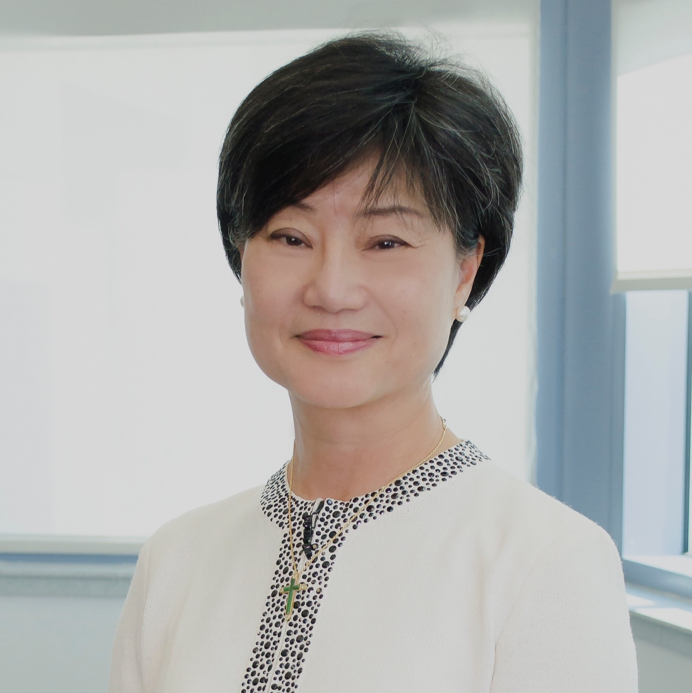

<div class="container">
    <div class="row">
        <div id="speaker-detail" class="col-lg-6 col-lg-offset-3">
            <div class="row">
                <button title="Close (Esc)" type="button" class="mfp-close">×</button>
                <div class="col-md-4 col-lg-4">
                    
                    <br />
                </div>
                <div class="col-md-8 col-lg-8">
                    <h2>Olivia Ho Cheng, 何淑圭</h2>
                    <h3>Vice Chairman & Founding Partner, BE Capital</h3>
                    <p>Ms. Olivia Ho Cheng is the Vice Chairman and founding partner of BE Capital, a medical PE fund which aims to capitalize on opportunities to improve operational efficiency of Greater China’s healthcare institutions and also to expand and integrate the healthcare industry's value chain. </p>
                    <p>Ms. Cheng is also a board director of Tufts U. School of Medicine, Tufts Medical Center, Virginia U. Oriental Medicine, Boston K Schwartz Center at MGH, US-China Health Summit, an NGO under Harvard School of Public Health.</p>
		    <p>Ms. Cheng has been the Chief Executive Officer and President of Aurora Imaging Technology Inc. since July 2003.  Ms. Cheng is a Partner at Pacific Republic Capital Corporation. She started her career as an Analyst at Getty Oil Company in Los Angeles and then entered banking in the mid-1980s to pursue a career with more opportunities for women. She served as President Medical Technology Co., Ltd. Previously, she spent eleven years of her career in the commercial ... banking industry as a corporate banker. </p>
		    <p>Ms. Cheng is actively involved in leading the expansion of Aurora both domestically and internationally. From 1991 to 1997, she served as a Senior Vice President of Far East National Bank in Southern California. </p>
                    <p>She founded Pacific Republic Capital and served as its Executive Vice President and Chief Financial Officer. </p>
                    <p>She served as a Director of Accuray Inc., from 1998 to 2002, she actively assisted with its preparation for an initial public offering (IPO). </p>
                    <p>For several years she served as a Director of The Trylon Corporation (known for the commercialization of PapSure for cervical cancer screening and VisiLite to detect oral cancer). She served as a Director at Pacific Republic Capital. Ms. Cheng graduated from National Chengchi University in Taiwan and has a Masters Degree in Economics from the University of California, Los Angeles.</p>
                </div>

            </div>
        </div>
    </div>
